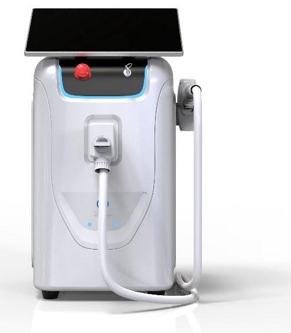
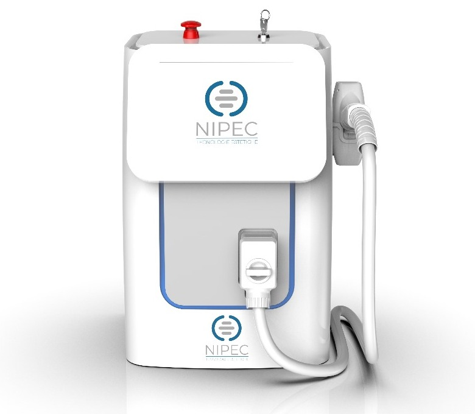
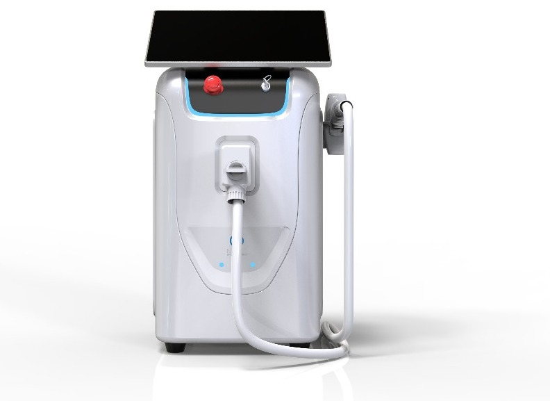

Ma solo se il dispositivo non si ferma e i parametri sono giusti. Ares è il diodo 808 su cui lavorano già molti centri: 10 diodi, 1500 W, testina in titanio. Nella versione 2026 la telecamera e il software IA ti propongono i parametri, e tu controlli.

Le due Ares hanno lo stesso motore: stessi diodi, stessi watt, stessa testina. Sulla 2025 imposti tu Joule, millisecondi e Hertz. Sulla 2026 li calcola il software. Chi sa lavorare sulla 2025 impara la 2026 in mezza giornata.

Diodo 808, lavoro pieno, comandi a mano. Pannello manuale: Joule, millisecondi, Hertz.

La telecamera guarda pelle e pelo, il software propone griglia, kJ target e fluenza. Il dispositivo non parte da solo: decidi sempre tu.
L'elettronica tiene ferma la corrente ai diodi anche se la rete del negozio balla. La cliente non ti dice più «oggi l'ho sentito di più».
Sulla 2026 il software propone i parametri a partire da quello che vede la telecamera. Tu non devi stare dietro a ogni impostazione.
Il titanio non si opacizza come le altre testine: è il pezzo che di solito si cambia e si paga.
| Caratteristica | Ares 2025 | Ares 2026 · IA |
|---|---|---|
| Tipo | Laser a diodo | Laser a diodo |
| Lunghezza d'onda | 808 nm | 808 nm |
| Diodi | 10 da 100 W | 10 da 100 W |
| Potenza | 1500 W | 1500 W |
| Emissione | 1–400 ms · macro canale | 1–400 ms · macro canale |
| Raffreddamento | TECH cool con micro chip | TECH cool con micro chip |
| Interfaccia | Pannello manuale: J · ms · Hz | Display touch digitale |
| Telecamera e IA | No | Sì · HR / SHR / SHR Stack |
| Testina | Titanio | Titanio |
| Rete elettrica | AC 220 V / 110 V | AC 220 V / 110 V |
| Sicurezza | Classe 4 · interlock | Classe 4 · interlock |
| Certificazione | CE italiana · MDR | CE italiana · MDR |
| Formato | Da banco | Da banco |
Non è un dispositivo importato e rimarchiato. Fascicolo tecnico, dichiarazione di conformità e numero di serie sono rintracciabili: se arriva un controllo, c'è una carta da mostrare con un nome e un indirizzo dietro.
Occhiali sempre, chiave e interlock che spegne il dispositivo se qualcosa non è a posto. Lo insegniamo alla consegna e lo verifichiamo all'esame.
Il dispositivo è l'inizio. Quello che fa lavorare un centro è quello che viene dopo: i protocolli, l'operatrice formata, qualcuno che risponde. Per questo lavoriamo in quattro tappe.
Prima di parlare di dispositivi guardiamo il tuo centro: chi sono le clienti, quante cabine hai, quanto costa un'ora di lavoro, cosa vendi già.
Scegliamo insieme la tecnologia giusta e costruiamo il trattamento intorno: prezzi, pacchetti, durata delle sedute, formula di acquisto.
Consegna pratica in cabina e un percorso a tappe che finisce con un esame. L'operatrice esce con un certificato valido 12 mesi.
Dopo la consegna restiamo. Un referente unico per il tuo centro, assistenza diretta e un controllo mensile per prevenire il fermo del dispositivo.
In cabina, sul dispositivo del centro, con clienti vere.
Si correggono le abitudini sbagliate della prima settimana.
Protocolli avanzati e casi reali portati dalle operatrici.
Prova pratica e test scritto di 20 domande.
Attestato nominale da esporre in centro. Si rinnova ogni anno.
Non hai un dispositivo inferiore: hai lo stesso dispositivo con meno aiuti. Valutiamo la permuta verso la 2026.
WhatsApp +39 351 846 6025
Numero verde 800 141 726
info@nipecestetica.com
Via Rovetta 29, 25080 Padenghe sul Garda (BS)
Rruga Donika Kastrioti 3, Tiranë · +355 69 212 9786
www.nipecestetica.eu
Il metodo · La formazione · Il catalogo